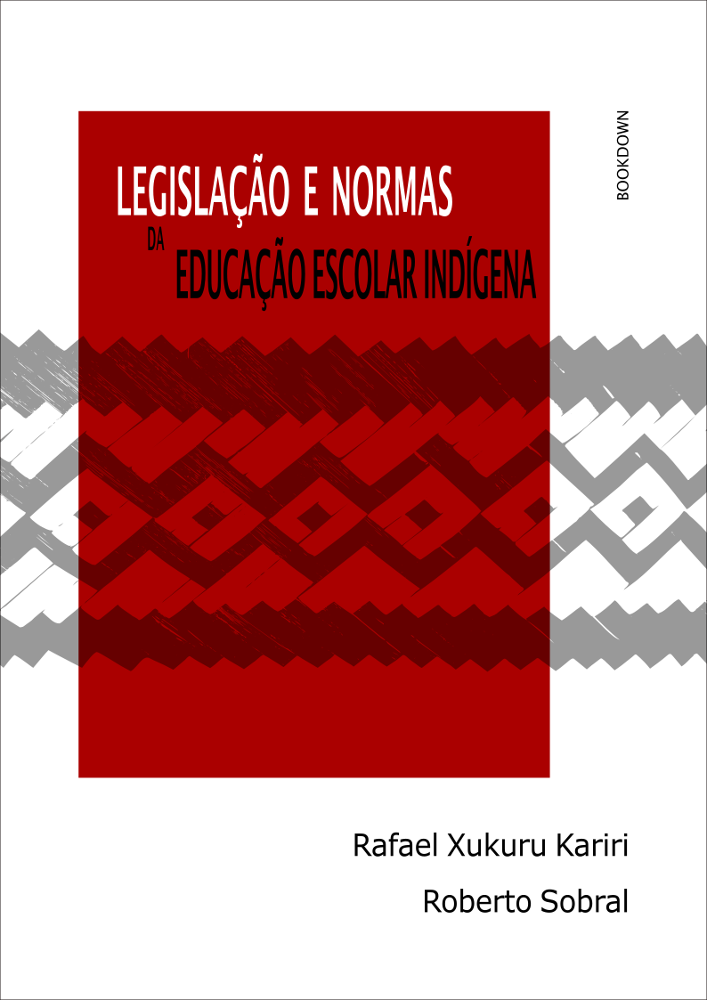

Legislação e normas da educação escolar indígena
07 de agosto de 2020
1 Apresentação


Este é um pequeno compilado de legislações e normas federais relacionadas à EDUCAÇÃO ESCOLAR INDÍGENA.
Nosso objetivo é apresentar um instrumento de consulta, simples e acessível, para todas as pessoas que trabalham na área ou para as que querem conhecer os principais balizadores da organização e do funcionamento da educação escolar indígena no âmbito federal.
Dada as constantes alterações dos atos legais e normativos da área educacional, atualizaremos frequentemente esta publicação a fim de que reflita as modificações mais recentes.
Para eventuais dúvidas, críticas ou sugestões, colocamo-nos à disposição por meio de: joserobertosobral@gmail.com / rafael.silva_19@hotmail.com.
Rafael Xucuru Kariri
Roberto Sobral

Legislação e normas da educação escolar indígena de Roberto Sobral / Rafael Xukuru Kariri está licenciado com uma Licença Creative Commons - Atribuição 4.0 Internacional.